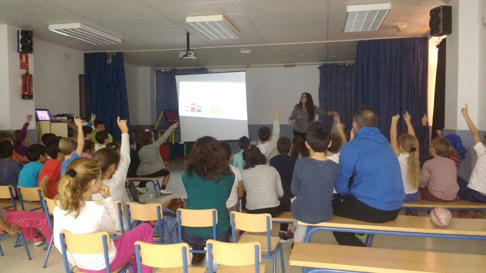

Educación de Excelencia en Rincón de la Victoria
Comprometidos con la formación integral, la innovación y el bilingüismo para preparar a nuestros estudiantes para el futuro.

Últimas Novedades
Mantente al día con lo que ocurre en nuestro centro educativo.

Reuniones con Familias (5 de Septiembre)
Horarios de las reuniones previstas para las nuevas tutorías. La convocatoria oficial se realizará a través de iPASEN.
Leer la noticia completa
Listado de Materiales y Libros 25/26
Ya está disponible el material orientativo y libros para Educación Infantil. Por favor, esperar a la reunión con el tutor.
Ver materiales
Nueva Gestión del Comedor Escolar
La empresa Aramark Servicios de Catering es ahora la encargada de gestionar el comedor con cocina "in situ".
Más informaciónNuestros Servicios
Accesos directos a los servicios e información más importante para las familias.
Comedor Escolar
Cocina "in situ" con menús equilibrados y supervisados para el desarrollo de nuestros alumnos.
Aula Matinal
Servicio de acogida temprana para facilitar la conciliación laboral de las familias del centro.
Bilingüismo
Programa bilingüe con "Language Assistants" para potenciar el aprendizaje del inglés.
Transformación Digital
Apostamos por la integración de las TIC como herramienta fundamental en el aprendizaje.